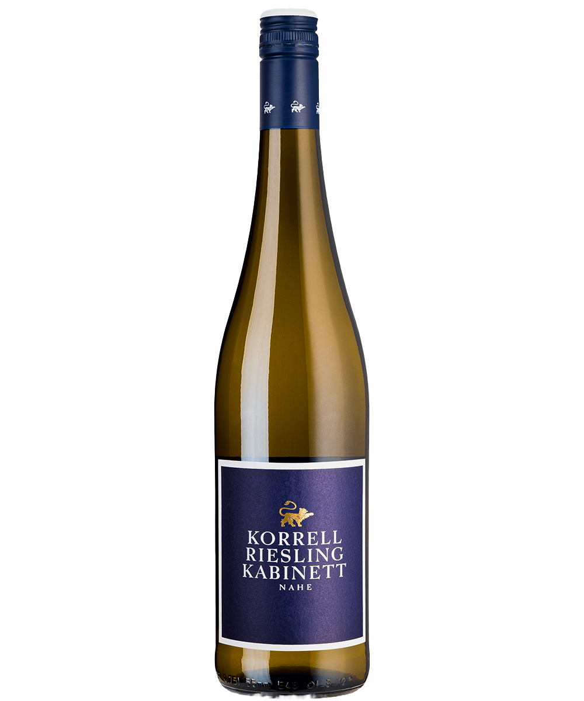

Proveniente dalle fresche colline della Mosella, il
Riesling Kabinett firmato Dr. Loosen è un bianco
delicato e profumato, prodotto da uve raccolte con
grande attenzione.
Al naso rivela note di mela verde, pesca bianca, fiori
di campo e un tocco minerale che richiama l’ardesia
dei suoli.
Il sorso è fresco, leggermente dolce e perfettamente
bilanciato da una spiccata acidità. Questo Riesling è
l’espressione pura del terroir tedesco, con un
equilibrio sottile tra leggerezza e intensità, che lo
rende versatile e affascinante anche con piatti
speziati o formaggi freschi.
